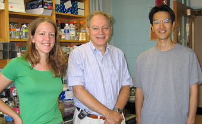

News Archives : 2004 : Genomic Analysis of Sporulation in Bacillus Subtilis
by Patrick Eichenberger, Masaya Fujita and Richard Losick
September 21, 2004
In the Losick laboratory at MCB, we are studying the developmental process of spore formation (sporulation) in the bacterium Bacillus subtilis. A hallmark of this primitive system of development is the formation of an asymmetrically positioned septum that generates unequal-sized progeny cells called the mother cell (the larger cell) and the forespore that follow different programs of differentiation. A paper by Eichenberger et al. in Volume 2, Issue 10 of PloS Biology (The Program of Gene Transcription for a Single Differentiating Cell Type during Sporulation in Bacillus subtilis) describes the five-hour program of gene expression in the mother cell. The entire program (or nearly so) is described as well as the underlying regulatory circuit that governs it. In this work, we found that differentiation involves the activation and repression of 383 genes (242 transcription units), representing 9% of the genes in the B. subtilis genome. We showed that this gene expression is governed by five positively and/or negatively acting transcription factors. These are the sigma factors sE and sK and the DNA-binding proteins GerE, GerR, and SpoIIID. The appearance of these regulatory proteins is governed by a hierarchical regulatory cascade of the form: σE→SpoIIID/GerR→σK→GerE. In a collaboration with the group of Jun Liu in the Statistics Department, we used computational approaches to identify possible binding sites for the transcription factors in the promoter regions of the genes they control. Finally, biochemical experiments allowed us to confirm binding of the transcriptional regulator to these regions.
In sum, our experiments reveal that the program consists of a series of pulses in which large numbers of genes are turned on and then turned off shortly thereafter by the action of the next regulatory protein in the hierarchy. This program of gene transcription can be understood in terms of a simple regulatory circuit involving a linked series of feed-forward loops that are responsible for generating pulses of gene transcription. We propose that this regulatory circuit will serve as a model for understanding other programs of cellular differentiation.
One of the coauthors of this study (Patrick Eichenberger) was supported by one of the 2003 Merck postdoctoral genome-related research awards established by Merck as a gift to Harvard.

Some of the coauthors: Caitlin Ferguson, Richard Losick and Masaya Fujita